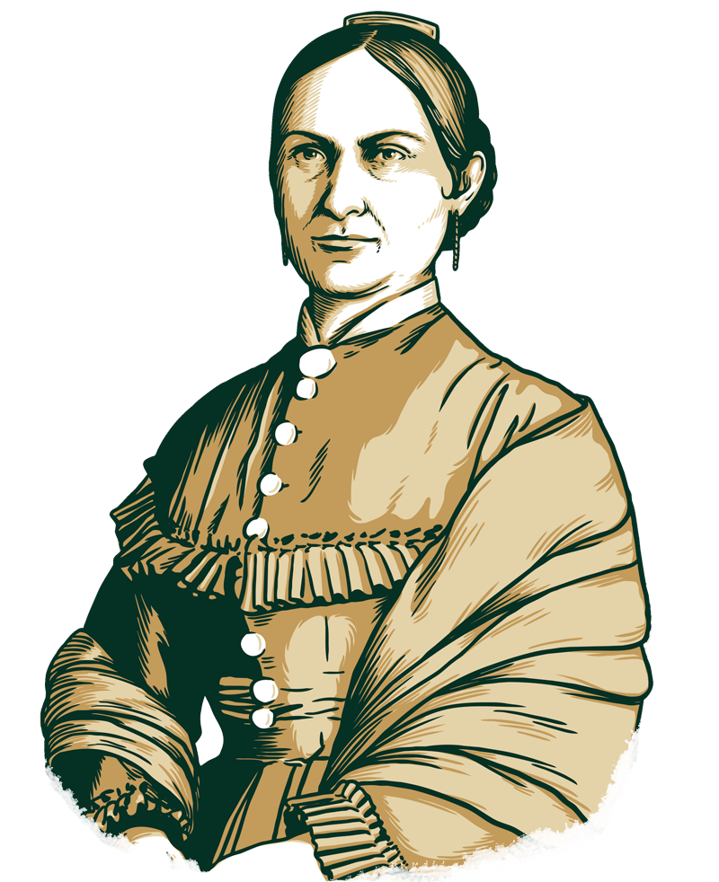
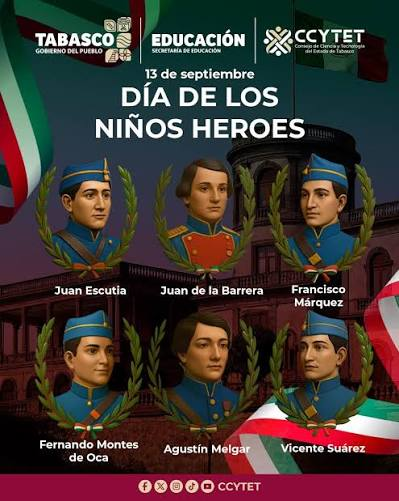
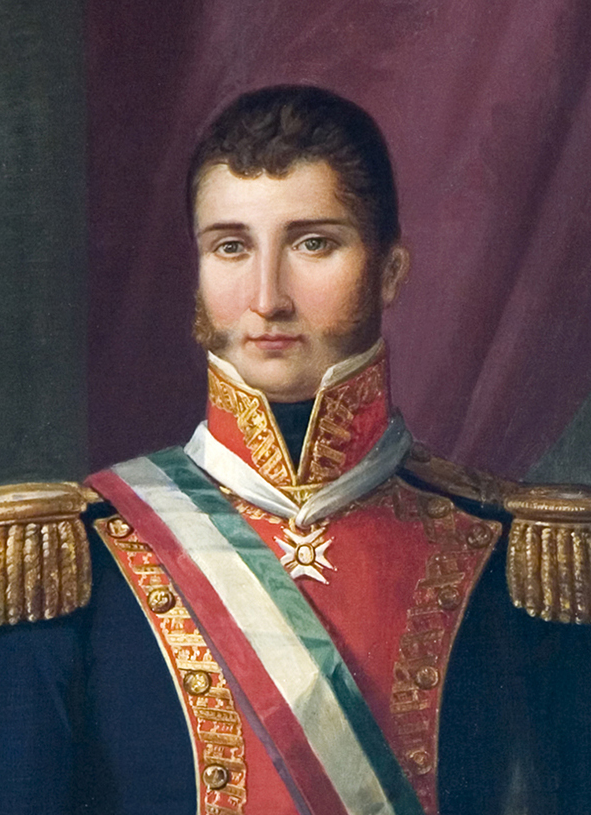

Miguel Hidalgo y Costilla
No solo dio el Grito; en diciembre de 1810 emitió un decreto histórico en Guadalajara que abolió la esclavitud y los tributos de castas por primera vez en América, transformando la rebelión en una lucha social.

José María Morelos y Pavón
Fue el cerebro político del movimiento. Redactó los Sentimientos de la Nación (1813), un documento vanguardista que propuso que la soberanía nace del pueblo, dividió los poderes del Estado y prohibió la tortura.

Josefa Ortiz de Domínguez
Financió la rebelión con su propio dinero y, al ser descubierta la conspiración el 13 de septiembre de 1810, logró mandar un aviso secreto a Hidalgo que evitó que todos terminaran en prisión.

Los Niños Héroes
Cadetes del Colegio Militar (como Juan Escutia, Agustín Melgar y Francisco Márquez) que el 13 de septiembre de 1847 decidieron quedarse a defender el Castillo de Chapultepec contra la invasión del ejército estadounidense. Representan el máximo símbolo de resistencia civil y patriotismo frente a una intervención extranjera.


Agustín de Iturbide y Vicente Guerrero
Lograron lo imposible en 1821: unir al bando insurgente y al realista bajo el Plan de Iguala. Crearon el Ejército Trigarante y juntos firmaron la paz que consumó la Independencia.

Ignacio Allende
Fue el cerebro militar y organizador de la primera etapa de la Independencia, encargado de planificar las conspiraciones de Querétaro. Como capitán profesional, aportó disciplina y estrategia táctica al movimiento insurgente. Debido a su capacidad técnica, asumió el mando supremo del ejército rebelde en 1811 tras tener profundas diferencias con Miguel Hidalgo.